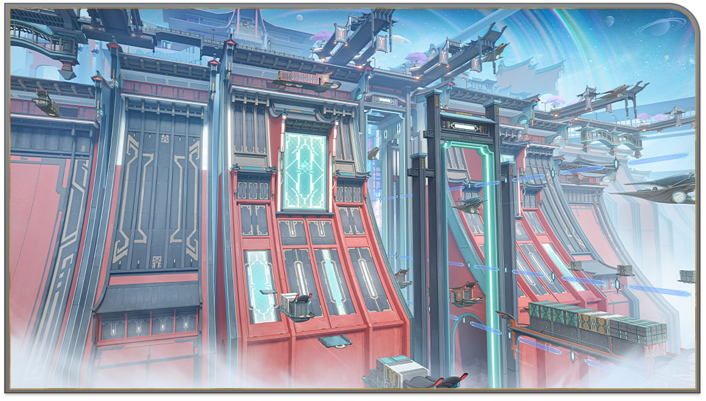
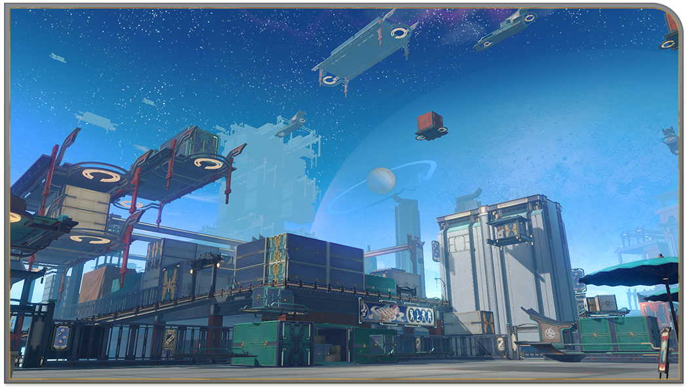

The Xianzhou Luofu
The Xianzhou Luofu is one of the six flagships of the Xianzhou Alliance. It sails in the endless ocean of stars like a one-way arrow, shooting toward the Lord of the Hunt's destined enemy.

Jade Gate
People arrived at the Luofu to seek medical treatment, study, and trade, as throngs of visitors fill the docks.

Starskiff Jetty
Starskiffs take off and land here like game pieces being placed on and off the board, transporting medicine seekers, knowledge pursuers, and merchant traders from here to all corners of the world.

Starwatcher Avenue
A bustling street in Central Starskiff Haven. Shops line the road for as far as the eye can see, and their lights are lit for perpetuity.

Palace of Astrum
The heart of the Luofu Sky-Faring Commission. Pilots and Navigators work ceaselessly here in this majestic palace with eaves shaped like the bow of a ship.

Cloudford
A cargo port where countless items from all corners of the galaxy pass through. Every day, Cloudford unceasingly handles huge amounts of port traffic from various worlds..
